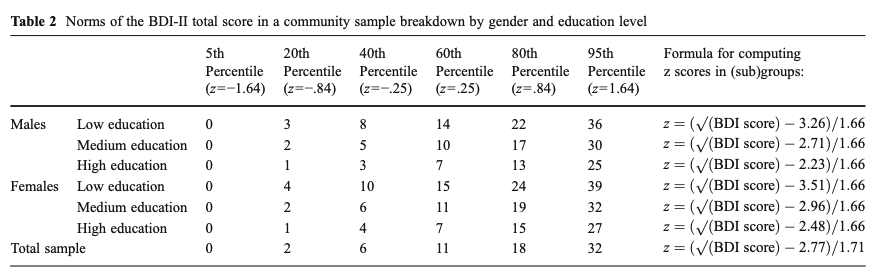
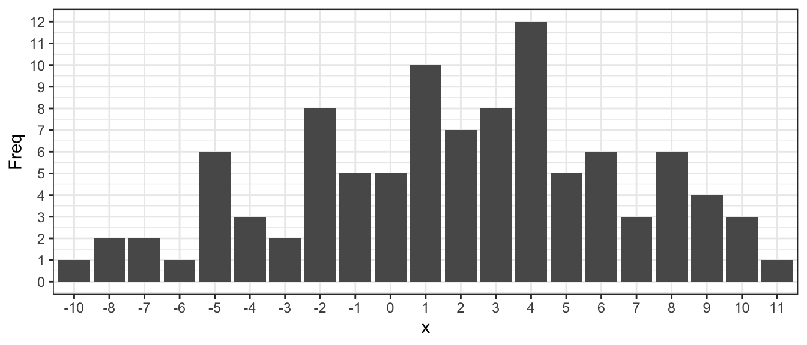
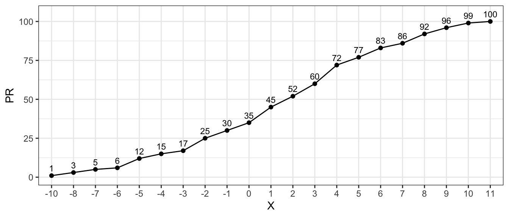
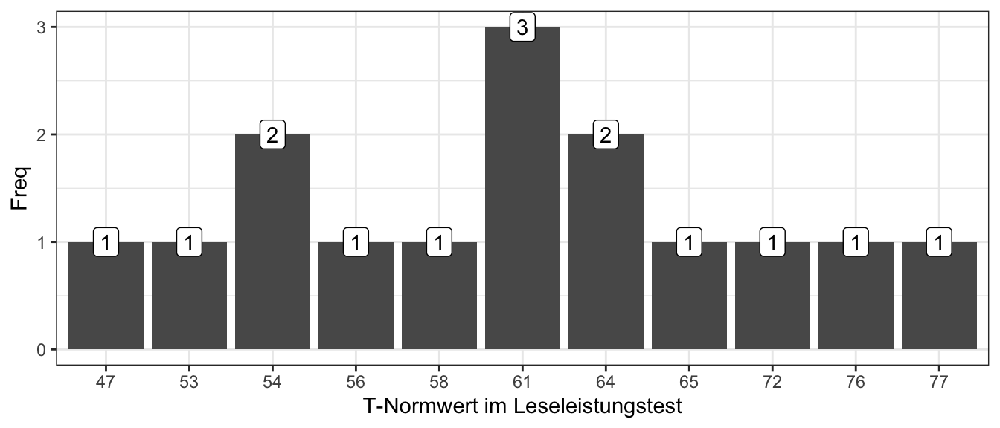
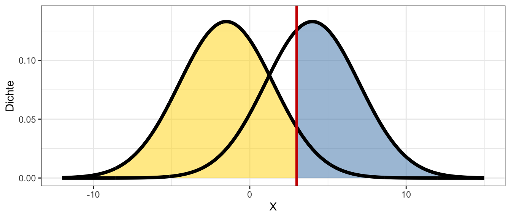

set.seed(101)
# Daten samplen
N <- 100
x <- rnorm(N, 2, 5)
x <- round(x)Rechenkompetenzen der Diagnostik
Belastbare psychologische Diagnostik ist an vielen Stellen auf diagnostische Rechenkompetenzen angewiesen. Im Folgenden werden einige dieser Kompetenzen geübt.
Ablesen und Berechnen von Normwerten
Aufgaben mit der BDI-II Norm
Testwerte lassen sich durch den Vergleich mit einer Normstichprobe interpretieren. Im einfachsten Fall liegen dafür Normtabellen vor. Im Folgenden finden Sie den Auszug einer Normtabelle für den BDI-II:

Roelofs, J., Van Breukelen, G., De Graaf, L. E., Beck, A. T., Arntz, A., & Huibers, M. J. H. (2013). Norms for the Beck Depression Inventory (BDI-II) in a large dutch community sample. , 35(1), 93–98. https://doi.org/10.1007/s10862-012-9309-2
Werte ablesen
In einer Studie wird der Zusammenhang zwischen Schlafgewohnheiten und depressiven Symptomen untersucht. In einer Subanalyse soll auf die Bevölkerung der \(40\%\) betroffensten Frauen mit hohen Bildungsabschlüssen rückgeschlossen werden. Ob eine Person mit in die Analyse mit aufgenommen wird, soll anhand ihres BDI-II Scores entschieden werden. Ab welchem BDI-II Score sollte eine Frau mit hohem Bildungsabschluss in die Analyse aufgenommen werden?
Lösung
Personen mit einem BDI-II Score \(>7\) sollten in die Analyse mit aufgenommen werden.
Rohwerte transformieren
Es gibt verschiedene Normwerteverteilungen (z, IQ, T, SW, etc.), die anhand von Mittelwert und Standardabweichungen definiert sind. Wenn Mittelwert und Standardabweichung der Testwerte in einer Normstichprobe bekannt sind, können die Testwerte entsprechend normiert werden.
| Normbezeichnung | Transformation |
|---|---|
| z-Skala | \(z_i = \frac{x_i - \overline{x}}{SD(x)}\) |
| IQ-Abweichungsskala | \(IQ_i = 100 + 15 z_i\) |
| T-Werte | \(T_i = 50 + 10 z_i\) |
| Standardwerte | \(SW_i = 100 + 10 z_i\) |
| PISA-Skala | \(P_i = 500 + 100 z_i\) |
| Stanine-Normwert | \(S_i \approx 5 + 2 z_i\) |
| Prozentrang | \(PR_i = 100 \frac{freq_{\text{cum}}(X_i)}{N}\) |
Eine Person erzielt einen Testwert von \(36\). In der Normstichprobe weisen die Testwerte einen Mittelwert von \(\overline{x} = 31\) und eine Standardabweichung von \(SD(x) = 5\) auf.
Welchen z-Wert hat die Person im Vergleich zur Normstichprobe?
Der z-Wert lässt sich anhand der Formeln in andere Normwerte transformieren. Welcher T-Wert ergibt sich daraus?
Lösung (a)
Gegeben:
\(x = 36\)
\(\overline{x} = 31\)
\(SD(x) = 5\)
Gesucht:
\(z = \frac{x - \overline{x}}{SD(x)} = \frac{36 - 31}{5} = 1\)
Lösung (b)
Gegeben:
\(z = 1\)
Gesucht:
\(T = 50 + 10z = 50 + 10 = 60\)
Prozentränge in R berechnen
Nutzen Sie den Code um die Daten der darunter folgenden Abbildung zu samplen.
Histogramm:

Berechnen Sie die Prozentränge in R und überprüfen Sie Ihr Ergebnis anhand der Abbildung.
Prozentränge:

Lösung
set.seed(101)
# Daten samplen
N <- 100
x <- rnorm(N, 2, 5)
x <- round(x)
# Prozentränge berechnen
cumsum(table(x) / N)*100-10 -8 -7 -6 -5 -4 -3 -2 -1 0 1 2 3 4 5 6 7 8 9 10
1 3 5 6 12 15 17 25 30 35 45 52 60 72 77 83 86 92 96 99
11
100 Normwerttransformation in einem Fallbeispiel
Die Lesefähigkeit von Emilia wurde mit Hilfe eines validierten Leistungstests für Kinder erhoben. Um Emilias Leistung mit der Leistung von 9-Klässlerinnen in Rheinland-Pfälzer Gymnasien vergleichbar zu machen, wurde ihre Punktzahl von der leitenden Diagnostikerin zu einem \(T\)-Wert von \(T = 56\) transformiert.
Berechnen Sie Emilias Leistung als IQ-Wert.
Berechnen Sie den Prozentrang von Emilia innerhalb ihrer Schulklasse. In der Abbildung finden Sie dazu Häufigkeiten der T-Normwerte der Schüler:innen in Emilias Klasse.

Lösung (a)
Gegeben:
\(T = 56\)
Gesucht:
\(IQ = 100 + 15z\)
\(z = \frac{T - 50}{10}\)
Also \(IQ = 100 + 15 \cdot \Big(\frac{T - 50}{10}\Big) = 109\)
Lösung (b)
Gesucht:
\(PR = 100 \cdot \frac{freq_{cum}(x)}{N}\)
\(x = 56\)
Abgelesen:
\(freq_{cum}(56) = 5\)
\(N = 15\)
Also \(PR = 100 \frac{5}{15} \approx 33.33\)
Erstellen einer Normtabelle
Die nächste Aufgabe ist etwas länger als die anderen. Sie werden in diesem Abschnitt Daten in R simulieren und selbst eine Normtabelle für einen Test erstellen.
Stellen Sie sich vor, Sie hätten in einem Forschungsprojekt einen Test mit drei Items entwickelt - zum Beispiel ein Screening Instrument zur Detektion von Spinnenangst. \(N = 1000\) Personen aus der Gesamtbevölkerung bewerteten die drei Items auf einer fünfstufigen Ratingskala (stimme nicht zu, stimme eher nicht zu, weder noch, stimme eher zu, stimme zu). Alle Items sind positiv gepolt.
Ihre Aufgabe wird es sein, anhand dieser Daten eine Normtabelle zu generieren, die nach Geschlecht (Mann, Frau, Divers) und fünf Altersbändern ([18, 25), [25, 35), [35, 45), [45, 55), [55, 65)) differenziert. Anwender:innen sollten anhand der Tabelle Summenscores in Standardwerte umwandeln können. Die folgenden Aufgaben leiten Sie schrittweise zu diesem Ergebnis.
Der erste Schritt ist es, die Antworten der \(N = 1000\) Versuchspersonen in Ihrer R-Session zu generieren. Da es sich um ein fiktives Beispiel handelt, können wir selbst Übungsdaten simulieren. Genau das ist Ihre erste Aufgabe.
Kopieren Sie den folgenden Code-Abschnitt in Ihre IDE (z.B. RStudio) und führen sie den Code vollständig aus.
# Seed setzen
set.seed(5546)
# Anzahl der Personen
N <- 1000
# Anzahl der Items
I <- 3
# Geschlecht der Personen festlegen
geschlecht <- sample(
x = c("mann", "frau", "divers"),
size = N,
replace = TRUE,
prob = c(0.46, 0.46, 0.08)
)
# Altersgruppe der Personen festlegen
alter <- sample(
x = c("[18, 25)", "[25, 35)", "[35, 45)", "[45, 55)", "[55, 65)"),
size = N,
replace = TRUE,
prob = c(0.15, 0.25, 0.25, 0.20, 0.15)
)
# Fragebogenantworten simulieren
U <- teachIRT::sim_pcm(n = N, m = I, m_star = 4) + 1
# Fragebogenantworten und Datensatz mergen
dat <- dplyr::bind_cols(
person = 1:N,
geschlecht = geschlecht,
alter = alter,
U
)
# Oberste zehn Zeilen des Datensatzes anzeigen
dat <- dplyr::as_tibble(dat)
print(dat)# A tibble: 1,000 × 6
person geschlecht alter item_1 item_2 item_3
<int> <chr> <chr> <dbl> <dbl> <dbl>
1 1 mann [35, 45) 4 3 4
2 2 mann [45, 55) 4 5 5
3 3 frau [25, 35) 4 4 3
4 4 frau [45, 55) 2 1 1
5 5 mann [35, 45) 4 5 2
6 6 mann [25, 35) 3 2 2
7 7 frau [35, 45) 3 3 1
8 8 mann [55, 65) 3 5 4
9 9 frau [55, 65) 4 3 4
10 10 mann [18, 25) 4 4 3
# ℹ 990 more rowsNun sollten Sie in Ihrer R-Session auf den Datensatz dat zugreifen können. Da Sie zu Beginn mit dem Befehl set.seed() einen bestimmten Startwert für die Zufallsziehungen im Code-Abschnitt festlegen, sollten Sie, wenn Sie den Code-Abschnitt wiederholt vollständig ausführen auch immer wieder die gleichen Daten generieren.
Zuerst verschaffen wir uns einen Überblick über den Datensatz. Versuchen Sie Folgendes herauszufinden:
Welche Variablen hat der Datensatz?
Welche möglichen Werte haben die Variablen jeweils?
Wie viele Zeilen hat der Datensatz?
Lösung
Welche Variablen hat der Datensatz?
Um das herauszufinden, kann man den Befehl colnames(dat) verwenden.
colnames(dat)[1] "person" "geschlecht" "alter" "item_1" "item_2"
[6] "item_3" Welche möglichen Werte haben die Variablen jeweils?
dat$person enthält natürliche Zahlen von \(1\) bis \(1000\) und kodiert, zu welcher Person eine Zeile jeweils gehört. Hier die ersten 10 Personen:
dat$person[1:10] [1] 1 2 3 4 5 6 7 8 9 10Die möglichen Werte (und Häufigkeiten) der Geschlechtsvariable, dat$geschlecht, und der Altersvariable, dat$alter, können Sie sich so anzeigen:
table(dat$geschlecht)
divers frau mann
60 452 488 table(dat$alter)
[18, 25) [25, 35) [35, 45) [45, 55) [55, 65)
153 235 251 191 170 Die Variablen dat$item_1 bis dat$item_5 enthalten die Antworten auf die fünf Fragebogenitems:
table(dat$item_1)
1 2 3 4 5
58 225 391 256 70 table(dat$item_2)
1 2 3 4 5
59 215 389 264 73 table(dat$item_3)
1 2 3 4 5
74 237 340 258 91 Wie viele Zeilen hat der Datensatz?
Dafür können wir den Befehl nrow() verwenden.
nrow(dat)[1] 1000Wenn Sie der Struktur dieser Aufgabe folgen, werden Sie recht kleinschrittig zur fertigen Normtabelle geleitet. Überlegen Sie dennoch vorher selbst, welche Schritte Sie unternehmen müssten, um aus den simulierten Daten eine Tabelle zu erzeugen, die es Ihnen ermöglicht, jeden Rohwert in einen Standardwert zu transformieren.
Im nächsten Schritt Berechnen Sie aus den Antworten auf die drei Items für jede Person einen Summenscore. Später in der Vorlesung und Übung werden Sie Alternativen zum Summenscore kennenlernen. Für diese Aufgabe wird es aber ausreichen, Test-Scores durch einfache Summen zu erzeugen.
Erzeugen Sie eine neue Variable dat$score im Datensatz, indem Sie die Antworten auf die drei Items summieren.
Lösung
dat$score <- dat$item_1 + dat$item_2 + dat$item_3Wenn wir nun den Datensatz anzeigen, ist die neue Variable score zu sehen:
print(dat)# A tibble: 1,000 × 7
person geschlecht alter item_1 item_2 item_3 score
<int> <chr> <chr> <dbl> <dbl> <dbl> <dbl>
1 1 mann [35, 45) 4 3 4 11
2 2 mann [45, 55) 4 5 5 14
3 3 frau [25, 35) 4 4 3 11
4 4 frau [45, 55) 2 1 1 4
5 5 mann [35, 45) 4 5 2 11
6 6 mann [25, 35) 3 2 2 7
7 7 frau [35, 45) 3 3 1 7
8 8 mann [55, 65) 3 5 4 12
9 9 frau [55, 65) 4 3 4 11
10 10 mann [18, 25) 4 4 3 11
# ℹ 990 more rowsIn den vorherigen Rechenaufgaben haben Sie verwendet, dass man einen Score in einen beliebigen Normwert transformieren kann, wenn man den Mittelwert und die Standardabweichung der Scores in Normstichprobe kennt. In der nächsten Aufgabe werden Sie daher Mittelwert und Standardabweichung für jede Kombination von Geschlecht und Altersbändern berechnen.
Berechnen Sie für jede Kombination von Geschlecht und Altersband einen mittleren Score und eine Standardabweichung der Scores. Das Ergebnis sollte ein data.frame (oder tibble) mit den Spalten geschlecht, alter, score_mean (Mittelwert in der Zelle), score_sd (Standardabweichung in der Zelle) sein. Nennen Sie den data.frame dstats.
Für diesen Schritt können Sie auch die Lösung kopieren, falls Sie selten mit R arbeiten.
Lösung
# Mittelwert
m <- aggregate(score ~ geschlecht + alter, dat, mean)
# Standardabweichung
s <- aggregate(score ~ geschlecht + alter, dat, sd)
# Neu berechnete Spalten umbenennen
names(m)[3] <- "score_mean"
names(s)[3] <- "score_sd"
# Zu dstats mergen
dstats <- merge(m, s, by = c("geschlecht", "alter"))
# Optional für schöneres Printing in tibble umwandeln:
dstats <- dplyr::as_tibble(dstats)Der resultierende data.frame sollte so aussehen:
print(dstats)# A tibble: 15 × 4
geschlecht alter score_mean score_sd
<chr> <chr> <dbl> <dbl>
1 divers [18, 25) 8.55 1.63
2 divers [25, 35) 8 2.36
3 divers [35, 45) 8.35 3.10
4 divers [45, 55) 8.82 2.32
5 divers [55, 65) 10.1 2.39
6 frau [18, 25) 9 2.58
7 frau [25, 35) 9.44 2.35
8 frau [35, 45) 9.51 2.43
9 frau [45, 55) 9.08 2.32
10 frau [55, 65) 9.13 2.04
11 mann [18, 25) 9.49 2.39
12 mann [25, 35) 8.97 2.31
13 mann [35, 45) 9.06 2.32
14 mann [45, 55) 9.39 2.32
15 mann [55, 65) 9.06 2.43Für jede Kombination der Geschlechts- und Altersvariable können Sie nun den Score-Mittelwert und die Standardabweichung ablesen. Diese Information ist ausreichend, um Summenscores (/Rohwerte) in z-Werte und anschließend in Standardwerte umzuwandeln. Berechnen Sie vor der Erstellung der gesamten Tabelle ein einzelnes Wertebeispiel.
Berechnen Sie den Standardwert einer 32-jährigen Frau mit einem Summenscore von \(4\).
Lösung
Gegeben:
\(x_i = 4\) Summenscore
\(\overline{x} = 9.44\) Score-Mittelwert in der Normstichprobe
\(SD(x) = 2.35\) Score-Standardabweichung in der Normstichprobe
Gesucht:
\(SW_i = 100 + 10 \cdot z_i\) Standardwert
Berechnung:
\(z_i = \frac{x_i - \overline{x}}{SD(x)} = \frac{4 - 9.44}{2.35}\)
\(SW_i = 100 + 10 \cdot \frac{4 - 9.44}{2.35}\)
Mit dem Taschenrechner:
z_i <- (4 - 9.44) / 2.35
SW_i <- 100 + 10 * z_i
print(SW_i)[1] 76.85106Gerundet ergibt sich \(SW_i \approx 76.85\), ein weit unterdurchschnittlicher Wert.
Nun können wir uns an die gesamte Tabelle machen. Überlegen Sie dafür zuerst, welcher Wert der minimal erreichbare Summenscore und welcher der maximal erreichbare Summenscore wäre.
Was sind jeweils der minimal und maximal erreichbare Summenscore im Beispiel?
Lösung
Den kleinstmöglichen Wert erhalten Sie, wenn Sie in allen drei Items Kategorie \(1\) wählen, also \(1 + 1+ 1 = 3\).
Den höchstmöglichen Wert erhalten Sie, wenn Sie in allen drei Items Kategorie \(5\) wählen, also \(5 + 5 + 5 = 15\).
Die Spanne/Range der simulierten Summenscores spiegelt diese Überlegung wider:
range(dat$score)[1] 3 15Wir benötigen also für jede Kombination von Geschlecht und Alter sowie jeden Summenscore zwischen 3 und 15 einen Standardwert. Um die Aufgabe etwas zu reduzieren, können Sie sich auf die möglichen Scores \(8, 10, 12\) beschränken.
Berechnen Sie für jede Kombination von Geschlecht und Altersband den Standardwert der Summenscores \(8\), \(10\) und \(12\).
Lösung
# z-Werte berechnen
dstats$z_8 <- (8 - dstats$score_mean)/dstats$score_sd
dstats$z_10 <- (10 - dstats$score_mean)/dstats$score_sd
dstats$z_12 <- (12 - dstats$score_mean)/dstats$score_sd
# Standardwerte berechnen
dstats$sw_8 <- 100 + 10*dstats$z_8
dstats$sw_10 <- 100 + 10*dstats$z_10
dstats$sw_12 <- 100 + 10*dstats$z_12
# z-Wert wieder löschen
dstats$z_8 <- NULL
dstats$z_10 <- NULL
dstats$z_12 <- NULLDie fertige Normtabelle sollte etwa so aussehen:
print(dstats)# A tibble: 15 × 7
geschlecht alter score_mean score_sd sw_8 sw_10 sw_12
<chr> <chr> <dbl> <dbl> <dbl> <dbl> <dbl>
1 divers [18, 25) 8.55 1.63 96.7 109. 121.
2 divers [25, 35) 8 2.36 100 108. 117.
3 divers [35, 45) 8.35 3.10 98.9 105. 112.
4 divers [45, 55) 8.82 2.32 96.5 105. 114.
5 divers [55, 65) 10.1 2.39 91.2 99.6 108.
6 frau [18, 25) 9 2.58 96.1 104. 112.
7 frau [25, 35) 9.44 2.35 93.9 102. 111.
8 frau [35, 45) 9.51 2.43 93.8 102. 110.
9 frau [45, 55) 9.08 2.32 95.3 104. 113.
10 frau [55, 65) 9.13 2.04 94.4 104. 114.
11 mann [18, 25) 9.49 2.39 93.7 102. 111.
12 mann [25, 35) 8.97 2.31 95.8 104. 113.
13 mann [35, 45) 9.06 2.32 95.4 104. 113.
14 mann [45, 55) 9.39 2.32 94.0 103. 111.
15 mann [55, 65) 9.06 2.43 95.6 104. 112.Lesen Sie zuletzt den Standardwert eines 45-jährigen Mannes mit einem Summenscore von 12 ab.
Lösung
\(111\)
Zu Beginn diser Aufgabe sollten Sie selbst überlegen, welche Schritte Sie unternehmen müssten, um aus den Daten eine Normtabelle zu erzeugen. Vergleichen Sie nun Ihre Erwartung mit den durchgeführten Schritten.
Sensitivität, Spezifität, ROC-Kurven, Youden-Index
Leider sind Diagnosen nicht immer zutreffend. Es kann durchaus passieren, dass eine Person, die eigentlich geeignet wäre, als ungeeignet klassifiert wird. Genauso kann es passieren, dass eine Person, die eigentlich ungeeignet ist, als geeignet klassifiziert wird.
Tabelle aller möglichen Zustände
Erstellen Sie eine Tabelle aller möglichen Kombinationen aus wahren Zuständen \({\text{geeignet}, \text{ungeeignet}}\) und Diagnosen \({\text{geeignet}, \text{ungeeignet}}\).
Benennen Sie jede der vier Kombinationen. Verwenden Sie dazu die folgenden Begriffe:
- Falsch positiv (FP)
- Richtig positiv (RP)
- Falsch negativ (FN)
- Richtig negativ (RN)
- False negative (FN)
- False positive (FP)
- True negative (TN)
- True positive (TP)
- Nehmen Sie an, dass eine Person mit einem Testwert \(>20\) als geeignet eingestuft wird. Finden Sie einen beispielhaften Testwert für jeden der vier Zustände.
Lösung
| Wahrer Zustand | Testwert Beispiel | Diagnose | Prüfung [De] | Prüfung [Eng] |
|---|---|---|---|---|
| Geeignet | \(21\) | Geeignet | RP | TP |
| Geeignet | \(20\) | Ungeeignet | FN | FN |
| Ungeeignet | \(23\) | Geeignet | FP | FP |
| Ungeeignet | \(13\) | Ungeeignet | RN | TN |
Formeln für Sensivität und Spezifität
Ergänzen Sie die Formeln für die Sensitivität und Spezifität. Versuchen Sie es zuerst ohne die Vorlesungsfolien und überprüfen Sie dann Ihr Ergebnis.
\(\text{Sensitivität} = \frac{RP}{? + ?}\)
\(\text{Spezifität} = \frac{?}{? + RN}\)
Lösung
\(\text{Sensitivität} = \frac{RP}{RP + FN}\)
\(\text{Spezifität} = \frac{RN}{FP + RN}\)
Sensitivität und Spezifität in einem Beispiel berechnen
Eine Schule möchte einen neuen Test verwenden, um hochbegabte Schüler:innen frühzeitig zu identifizieren. Ein etablierter Intelligenztest wird als Vergleichsstandard zur Überprüfung der Testvorhersagen herangezogen. Die Testergebnisse für eine Stichprobe von 500 Kindern sind:
| Urteil neuer Test | Urteil etablierter Test | \(n\) |
|---|---|---|
| Hochbegabt | Hochbegabt | \(10\) |
| Hochbegabt | Nicht hochbegabt | \(3\) |
| Nicht hochbegabt | Nicht hochbegabt | \(482\) |
| Nicht hochbegabt | Hochbegabt | \(5\) |
Berechnen Sie die Sensitivität und Spezifität des neuen Tests.
Lösung
Gegeben:
\(RP = 10\)
\(FP = 3\)
\(RN = 482\)
\(FN = 5\)
Gesucht:
Sensitivität \(= \frac{RP}{RP + FN} = \frac{10}{10 + 5} \approx .67\)
Spezifität \(= \frac{RN}{FP + RN} = \frac{482}{3 + 482} \approx .99\)
Den Youden-Index berechnen
Die Testwerte ungeeigneter Testpersonen sind normalverteilt mit \(X_u \sim N(-1.5, 3)\). Die Testwerte geeigneter Testpersonen sind normalverteilt mit \(X_g \sim N(4, 3)\). Eine Person wird als geeignet klassifiziert, wenn Sie einen Testwert \(>3\) aufweist. In der Abbildung sehen Sie die Dichterverteilungen der Testwerte ungeeigneter und geeigneter Personen.

Die gelb markierte Fläche umfasst \(93\%\) der Fläche unter der linken Verteilung. Die blau markierte Fläche umfasst \(63\%\) der Fläche unter der rechten Verteilung.
Berechnen Sie den Youden-Index.
Lösung
Gegeben:
\(RN = .93\)
\(RP = .63\)
Gesucht:
Sensitivität \(= \frac{RP}{FN + RP} = \frac{.63}{(1-.63) + .63} = .63\)
Spezifität \(= \frac{RN}{FP + RN} = \frac{.93}{(1-.93) + .93} = .93\)
\(\text{Youden-Index} = \text{Sensitivität} + \text{Spezifität} - 1 = .63 + .93 - 1 = .56\)